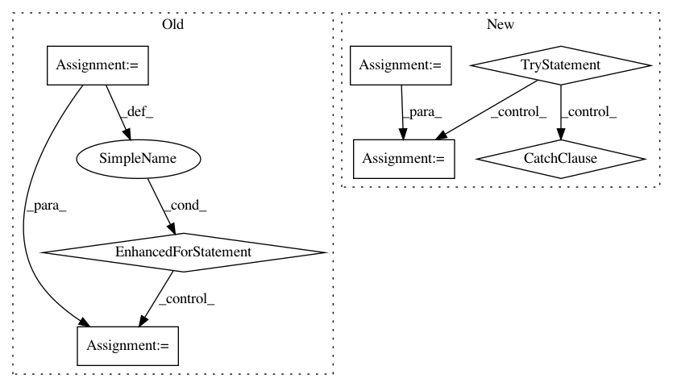

900b9a7f2884aaf419e62508be7497b0ad3e1f62,pytext/metric_reporters/squad_metric_reporter.py,SquadMetricReporter,_unnumberize,#SquadMetricReporter#,358
Before Change
// start_idx and end_idx are lists of char start and end positions in doc_str.
doc_tokens, start_idx, end_idx = self.tensorizer._lookup_tokens(doc_str)
doc_tokens = list(doc_tokens)
num_ans_tokens = len(ans_tokens)
start_char_idx = 0
end_char_idx = 0
answer_str = ""
for doc_token_idx in range(len(doc_tokens) - num_ans_tokens):
if doc_tokens[doc_token_idx : doc_token_idx + num_ans_tokens] == ans_tokens:
start_char_idx = start_idx[doc_token_idx]
end_char_idx = end_idx[doc_token_idx + num_ans_tokens - 1]
answer_str = doc_str[start_char_idx:end_char_idx]
break
return answer_str, start_char_idx, end_char_idx
// The following three functions are copied from Squad"s evaluation script.
// https://worksheets.codalab.org/rest/bundles/0x6b567e1cf2e041ec80d7098f031c5c9e/contents/blob/
After Change
// start_idx and end_idx are lists of char start and end positions in doc_str.
doc_tokens, start_idxs, end_idxs = self.tensorizer._lookup_tokens(doc_str)
// find the offset of doc_tokens in tokens
offset = list(
map(
lambda x: tokens[x : x + len(doc_tokens)] == doc_tokens,
range(len(tokens) - len(doc_tokens) + 1),
)
).index(True)
assert offset > -1
// find the answer char idxs
start_char_idx = 0
end_char_idx = end_idxs[-1]
try:
start_char_idx = start_idxs[ans_token_start - offset]
end_char_idx = end_idxs[ans_token_end - offset]
except IndexError:
// if token indices fall outside the bounds due to a model misprediction.
pass
ans_str = doc_str[start_char_idx:end_char_idx]
return ans_str, start_char_idx, end_char_idx
// The following three functions are copied from Squad"s evaluation script.
In pattern: SUPERPATTERN
Frequency: 3
Non-data size: 7
Instances
Project Name: facebookresearch/pytext
Commit Name: 900b9a7f2884aaf419e62508be7497b0ad3e1f62
Time: 2021-02-24
Author: debo@fb.com
File Name: pytext/metric_reporters/squad_metric_reporter.py
Class Name: SquadMetricReporter
Method Name: _unnumberize
Project Name: pyinstaller/pyinstaller
Commit Name: a5505747ac8b1f3891a63363a9b86af480452f77
Time: 2018-05-29
Author: itsayellow+dev@gmail.com
File Name: PyInstaller/building/osx.py
Class Name: BUNDLE
Method Name: assemble
Project Name: ntucllab/libact
Commit Name: 31832e8e8d05da9aaad1d608f7543579a2f166e6
Time: 2015-03-02
Author: yangarbiter@gmail.com
File Name: libact/query_strategies/variance_reduction.py
Class Name: VarianceReduction
Method Name: Phi